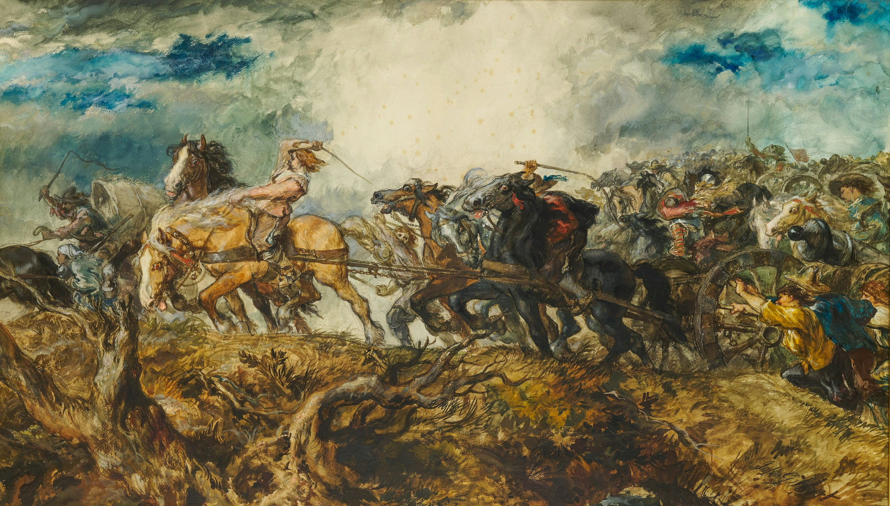

Arte & História
Restauro digital recupera as cores originais do fresco das "Senhoras Azuis" de Knossos
Pesquisadores usaram análise de pigmentos e reconstrução digital para revelar como a famosa pintura minoica aparecia há mais de 3.500 anos, antes do desgaste do tempo.
Ler mais →
Arte & História
A pintura rupestre mais antiga do mundo e o mistério de quem a fez
Datada em quase 68 mil anos, uma arte encontrada em caverna na Indonésia reabre o debate sobre se neandertais também foram capazes de criar expressões artísticas.
Ler mais →
Arte & História
DNA de 4.500 anos permite reconstruir o rosto de um antigo egípcio
Pesquisadores sequenciaram o genoma de um homem que viveu na época das primeiras pirâmides, possibilitando uma reconstrução facial baseada em escaneamento 3D do crânio.
Ler mais →
Arte & História
Análise por raios-X revela pintura escondida sob obra renascentista italiana
Tecnologia de imagem multiespectral identificou uma composição completamente diferente sob as camadas finais de tinta de um quadro do século XV, sugerindo mudança de encomenda.
Ler mais →
Arte & História
Manuscrito medieval esquecido em biblioteca revela rota comercial entre Europa e Oriente
Catalogado por séculos como cópia sem valor, o documento iluminado contém anotações de mercadores que detalham trocas culturais ao longo da Rota da Seda.
Ler mais →
Arte & História
Vasos gregos recém-restaurados mostram cenas inéditas de rituais cotidianos
A limpeza de peças de cerâmica encontradas na Sicília expôs pinturas que haviam sido cobertas por depósitos minerais ao longo de mais de dois mil anos.
Ler mais →Nenhuma notícia encontrada 🔍
Tente pesquisar por outro termo, como "fresco", "renascentista" ou "manuscrito".